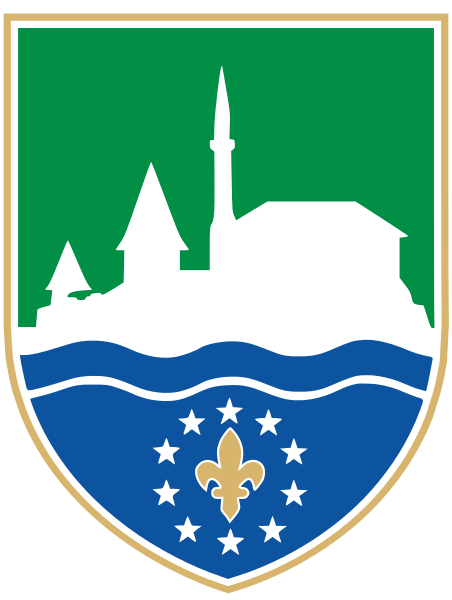
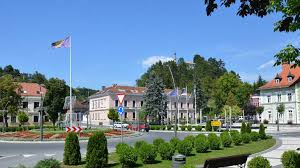
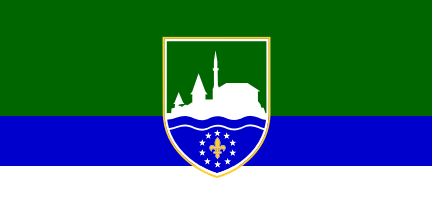
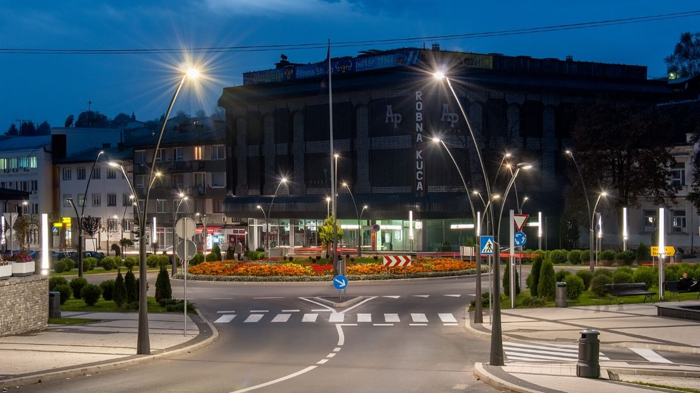
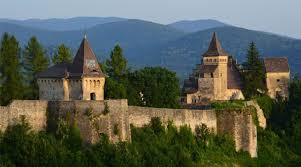
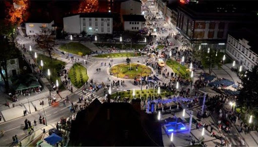

Pogledaj:
Pocetna Grad Bihac Grad Cazin Opcina Kljuc Opcina Buzim Sanski Most Velika Kladusa Bosanska Krupa Bosanski PetrovacZapratite:
Područje Cazina bilo je naseljeno još u pretpovijesnom dobu. Na lokalitetima Stijena, Selište, Gradina i Čungar pronađeni su ostatci raznih predmeta od kostiju, kamena, gline i bakra koji potječu iz pretpovijesnog doba.
Cazin je grad u sjeverozapadnom dijelu Bosne i Hercegovine na križanju puteva koji vode od Bihaća prema Velikoj Kladuši, susjednoj Hrvatskoj i dalje prema zapadnoj Europi
Na području Cazina nalaze se značajne geološke rezerve gipsa, tufora, kvarcnog pijeska, pločastih vapnenaca i drugih minerala. Sjeveroistočno od naselja Stijena, na površini nešto manjoj od 1 km² otkrivene su naslage gipsa. Geološke rezerve su relativno velike, pa se cijeni da postoje uvjeti za dalja istraživanja radi utvrđivanja industrijskih rezervi i njegovu primjenu u građevinarstvu.
 Grb grada Cazina   Zastava grada CazinaPovrsina: 356 km²
Broj stanovnistva u 2013. godini je iznosio: 13.863
  